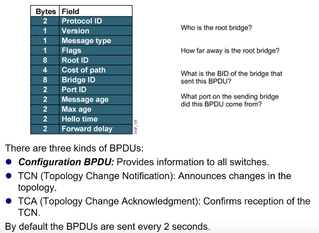
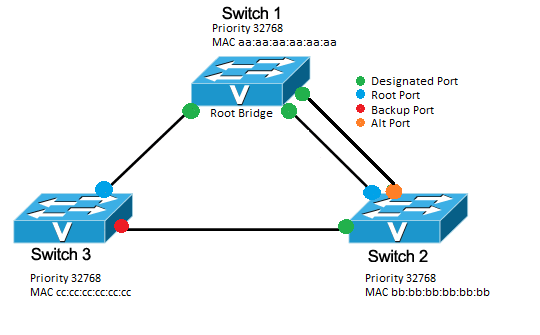
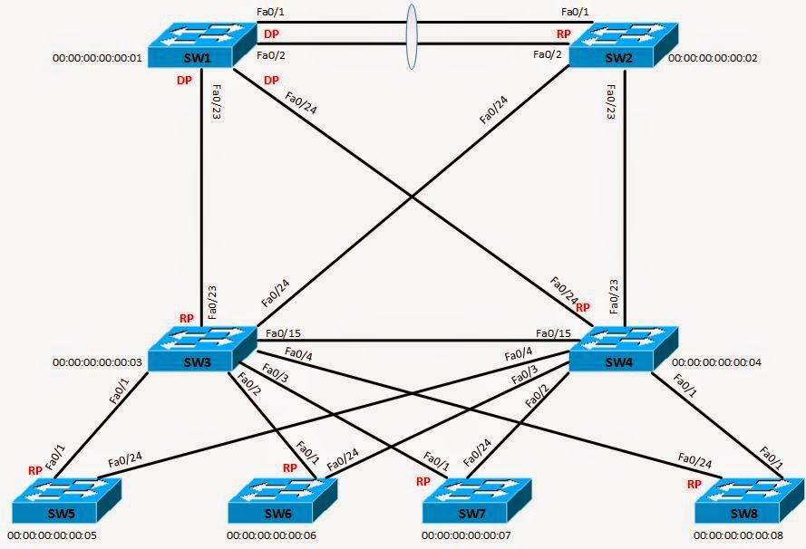

spanning tree protocol (stp)
LinkedIn | GitHub Spanning Tree Protocol (STP) is a Layer 2 protocol in networking that is used to prevent looping within a network. Looping can occur when there are redundant paths between switches. Because switches sometimes broadcast traffic, that is, send information out all connected paths, if there is a redundant path, traffic will never reach it's intended destination and instead continuously be forwarded in a loop.

Figure 1: Redundant link present between switch A and B. Presume Station M sends out broadcast intended to reach station H. Because STP is not implemented, traffic can travel through the top connection from B to A. Once traffic has reached A, it will rebroadcast out any connections that it did not receive the broadcast from. This means one rebroadcast will go to Station N and one will go to Switch B via the bottom link. B will then rebroadcast to Station M and back to Switch A via the top link. This process repeats indefinitely and is called a loop.
When these loops occur, the switches will continue rebroadcasting traffic, generating a broadcast storm. This means the network has effectively become oversaturated with traffic, and it's functionality deteriorates.Because redundant paths in a network are often intentional parts of it's design, as they provide resiliency, STP must be implemented to prevent looping.
In a traditional network, STP needs to be enabled on the desired ports of each switch individually. To do this, see [link to guide on enabling STP]. Once enabled, switches will send out BPDUs (Bridge Protocol Data Unit) every 2 seconds from all ports in which STP is enabled. These BPDUs are used to identify the redundant links within a network as well as determine which switch is the "root bridge".
Since switches do not inherently have an understanding of the network topology it is connected to, it needs to go through a learning phase. This is where BPDUs come in. Each BPDU contains a BID (Bridge ID), PID (Port ID), and Root ID. The BID indicates which switch sent out the BPDU, the PID says which port it was sent from, and the Root ID indicates which switch is believed to be the root bridge.

Figure 2: Diagram showing makeup of BPDU. Pay attention to Bridge ID, Port ID, and Root ID. Other information like cost of path is used for the STP path alogrithm.
Initially, each switch will believe it is the root bridge as it only knows about itself. As BPDUs sent from connected devices are processed, the receiving devices begin to combine that information with what it already knows about itself by populating its address table. Ultimately, this will coalesce into each switch developing a full and accurate understanding of the network topology. This desired state is called "convergence" and when STP can begin forwarding traffic.
How does STP decide where to forward traffic to? This is achieved by all ports changing between one of five states.
Now that STP has a way of understanding the network topology and changing port states to either block or forward traffic for specific ports, it needs to determine the path traffic should be forwarded. This is done by determining the "root bridge".

Figure 3: STP configured between three switches
The root bridge is the focal point of the network. Decisions on which port to put into blocking and forwarding are determined from the root bridge's perspective. The root bridge is determined during the learning phase. Initially, all switches will believe they are the root bridge and possess a specific Root ID. If a switch receives a BPDU claiming that another switch has a lower Root ID number, it will recognize the lower Root ID switch as the root bridge. When convergence is reached, the switch with the lowest Root ID in the network is the root bridge. Once a root bridge is established, all traffic is aimed at reaching that switch.
It is important to understand that not all switches in the network will have direct linkages to the root bridge. We know that all traffic is intended to reach the root bridge but, STP has to figure out which path the traffic should take. This is where port designation becomes relevant. In figure 3 there are 4 port designations shown. The most important two are "designated port" and "root port".
Designated port. For a given connection, the designated port is the port which will be receiving traffic. In Figure 3, this is all shown ports on the root bridge, as they receive traffic sent by the non-root bridges. If the designated port is not on the root bridge, it will forward traffic to the root port on that switch.
Root port. The root port is the port which sends outbound traffic. Traffic should be forwarded in the direction of the root bridge. This means there will only be one root port per switch, which is the current best path towards the root bridge.
The backup and alt ports from Figure 3 will be in blocking states but, can change to designated and root ports should the root bridge or a connection to it stops working, forcing STP to readjust its topology. For instance, if the connection between Switch 3 and the Root Bridge were severed, for traffic to be forwarded from Switch 3, it would need to first go to Switch 2, then from Switch 2 to Root Bridge. In this instance, the backup port on Switch 3 would become the root port, and its state will change from blocking to forwarding. When a switch detects a connection failure, it will inform other switches by sending out a Topology Change Notification (TCN) BPDU. More on TCN BPDUs later.
Now, we understand that STP works by assigning port designations to every port in the forwarding state. These port designations indicate which direction traffic should flow throughout the network so that it may reach the root bridge. What happens when the network becomes more complex?

Figure 4: STP in a network with multiple switches, each with multiple links. SW1 is root bridge. RP = Root Port. DP = Designated Port.
As you can see in Figure 4, each switch has multiple connections. How do we determine then which path is the most efficient to reach the root bridge? We need to know the best path because it determines where the root and designated ports will be.
To do this, there are two metrics which are considered by Spanning Tree's Algorithm (STA). Path cost and Bridge ID number. Path cost is the first determinant and if multiple paths have the same cost, then STP makes a decision based on which switch has the lowest BID.
10 Gb/s = 2
1 Gb/s = 4
100 Mb/s = 19
10 Mb/s = 100
Figure 4 depicts designated ports (DP) and root ports (RP) determined solely upon BID. This means we can assume that all connections are of equal speed.
Consider switches 5-8. SW 1 is the root bridge but none of them have direct connections to SW1. Therefore traffic from one of these switches must first stop at either SW3 or SW4, as those switches do have a direct link to the root bridge.
STP first needs to decide if traffic from SWs5-8 should go to SW3 or SW4 before heading to the root bridge. If they had a faster connection to either SW3 or SW4, the cost of path would be lower, and thus take that route. If all connections are equal speed however, it comes down to BID. Since SW3 has a BID of 00:00:00:00:00:03 and SW4 has a BID of 00:00:00:00:00:04, SW3 has the lower BID so traffic is routed there first. This is why the root ports of SWs5-8 are the connections to SW3 (assuming all links are the same speed). Please note that the receiving ports on SW3, SW4, and SW2 are designated ports but, this is not denoted in the figure.
Once traffic has made it to SW3, it now needs to decide how to send traffic to SW1. In the figure shown, since all connections are equal speeds, the direct connection from SW3 to SW1 is the path taken.
It's important to consider that even though there's a direct link from SW3 to SW4, it doesn't necessarily mean traffic will take that path. If that connection were slow, whereas the links from SW3 to SW2 to SW1 are fast, then traffic will go from SW3 to SW2 to SW1 since it presumably has a lower path cost. Think about ways this topology could be changed to result in traffic pathways.
If SW3 were to recognize its direct link to SW1 was severed, it will send out TCN BPDUs letting the other switches know of topology changes. The STA will then need to determine what changes need to be made for traffic to be routed to the root bridge. Should traffic move from the bottom switches to SW4, then to SW1? Should traffic go to SW3, then SW2, then SW1? If the links from the bottom switches to SW4 are slow but the link from SW3 to SW4 is fast, maybe traffic should go to SW3, then SW4, then SW1. All of these decisions are determined by the STA comparing the sum of different pathway costs.
If the root bridge went down instead of a connection, STP will make the switch with the next lowest Root ID the new root switch. Then, determine the new pathways traffic have to take. This means changing the root ports on connected switches to accommodate the new topology.